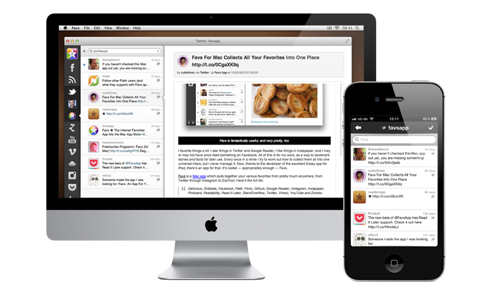

-

Flat Design
Flat design is a minimalist UI design genre, or design
language, commonly used in graphical user interfaces (such
as web applications and mobile apps), especially in
graphical materials as posters, arts, guide documents,
publishing products. -

Great Ideas
bulb design is a minimalist UI design genre, or design
language, commonly used in graphical user interfaces (such
as web applications and mobile apps), especially in
graphical materials as posters, arts, guide documents,
publishing products. -
Browser Compatebility
bulb design is a minimalist UI design genre, or
design language, commonly used in graphical user
interfaces (such as web applications and mobile apps),
especially in graphical materials as posters, arts,
guide documents, publishing products